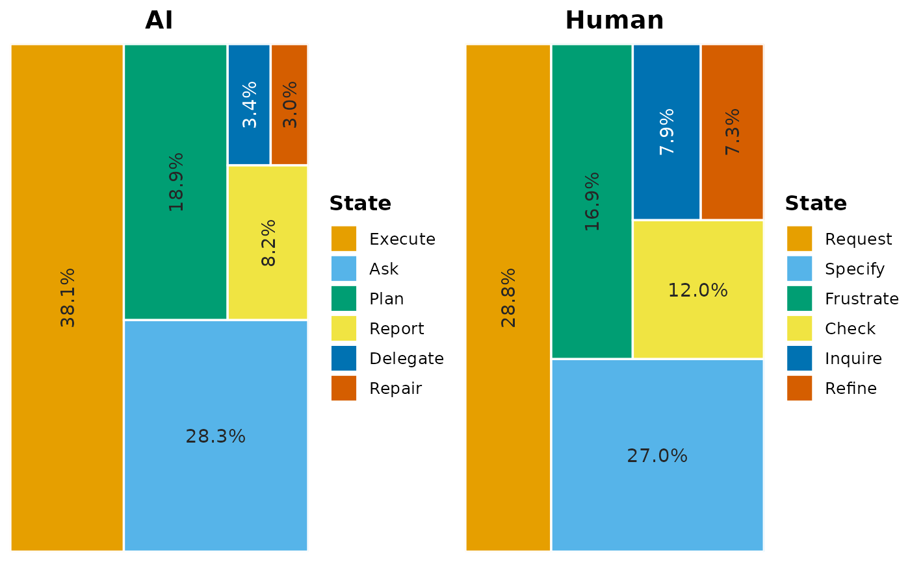
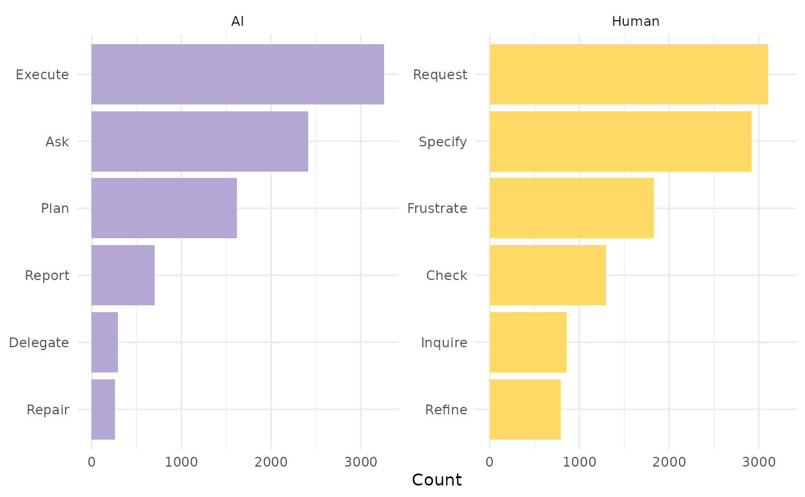

Plot the frequencies of the codes of an htna network
Source:R/plot_frequencies_htna.R
plot_frequencies_htna.Rdplot_frequencies_htna() plots the frequencies of the codes of an htna
network: the number of occurrences of every code, coloured by its actor
type. Knowing how often each code occurs helps before transitions are
interpreted: a rare code can have extreme transition probabilities that
rest on a few events, and the balance between the actor types (how much
the human and the AI each contribute) frames every later comparison.
plot_frequencies_htna() draws one of three views: a treemap of the codes
("treemap", the default, drawn with Nestimate's
plot_state_frequencies()), a single bar chart of all codes sorted by
count ("bars"), or one bar chart per actor type ("facet"). The bar
views are 'ggplot2' charts and need that package. It returns the
frequency object for the treemap and a ggplot object for the bar views.
The counts and proportions behind the plot are returned as a table by
frequencies_htna(). For how the transitions from each code deviate from
independence use mosaic_plot_htna().
Usage
plot_frequencies_htna(x, view = c("treemap", "bars", "facet"), ...)Arguments
- x
An htna network from
build_htna().- view
"treemap"(default),"bars"or"facet".- ...
Further arguments of
Nestimate::plot_state_frequencies()for the treemap; ignored by the bar views.
Value
For "treemap", invisibly, the frequency object of class
state_freq (its table via as.data.frame()). For "bars" and
"facet", a ggplot object, which can be modified with +.
Conditions
htna_missing_package when 'ggplot2' is not installed for a bar view;
htna_bad_input when a bar view is asked for an object that is not an
htna network.
Examples
data(human_ai)
net <- build_htna(human_ai, actor_type = "actor_type")
#> Metadata aggregated per session: ties resolved by first occurrence in 'session_date' (1 sessions), 'cluster' (42 sessions), 'actor_type' (24 sessions)
plot_frequencies_htna(net)

if (requireNamespace("ggplot2", quietly = TRUE)) {
plot_frequencies_htna(net, view = "facet")
}
